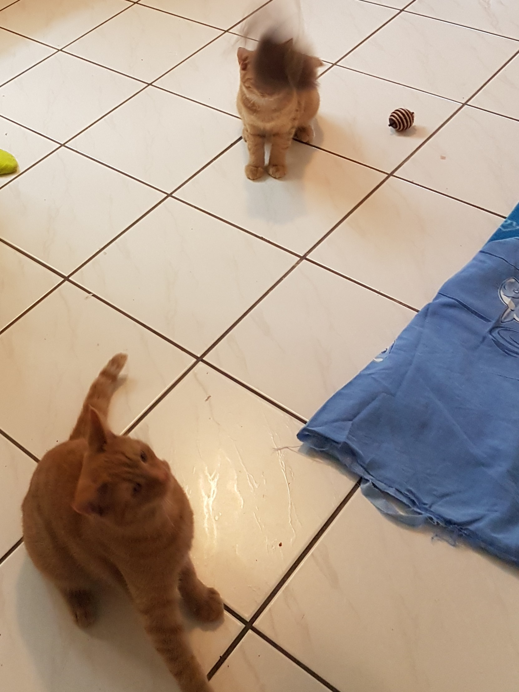
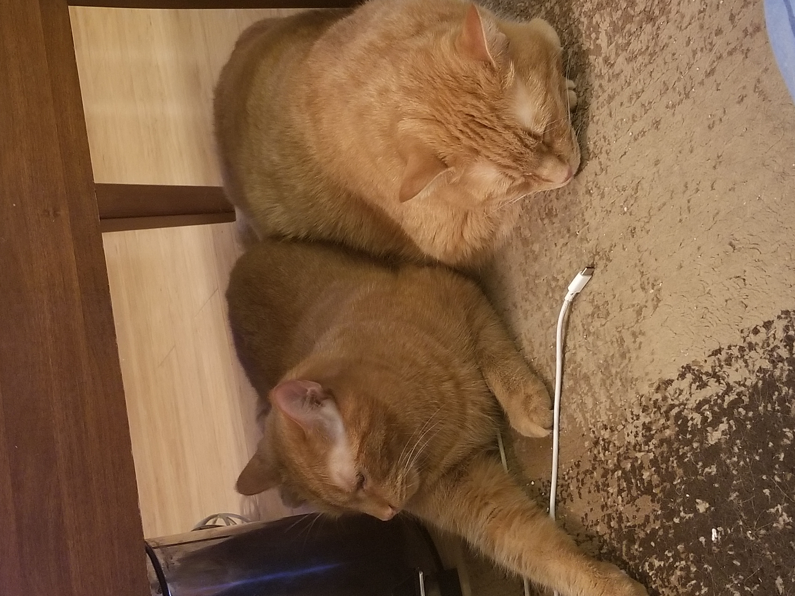

| Victor's Website |
|---|
My Cats |
| About Me |
| My Cats |
| Hobbies |
| Gaming |
| References/Citations |
|
Author: Victor Zhang, Date Published: 11/17/20 How I got themI own 2 tabby British Shorthair cats named Evan, a dark ginger furred cat with narrow orange eyes, and Vanoss, a golden and white furred cat with round orange eyes. They are twin brothers born March 17, 2016 and were put up for adoption after their previous owner gave them away. Their previous names were Neko ("cat" in Japanese) and Kot, I named then "Evan" and "Vanoss" because of my previous obsession with a certain youtuber but I don't regret it. We adopted them from Petsmart on September 14 2016 when they were 6 months old, since they were brothers you had to adopt both of them if you wanted one. They started out pretty well, already litter trained but didn't know how to use the scratching post and destroyed our couch.First ImressionsAt 6 months they were pretty small and liked to play fight with eachother and it always seemed that Evan would win the fights. We bought them a variety of toys from balls with bells in them to teaser toys. Vanoss has a high pitched mew compared to Evan's meow which I found really weird but I assumed it was because he was neutered but I'm still not sure to this day. As kittens a Petsmart employee recmomended us this expensive brand of cat food which we used until they became 1 year old and now we feed them the normal food from popular brands. From the beginning, Evan always seemed like the smarter brother whereas Vanoss was the friendly one, this made Evan seem older but I don't really know. Photo: Victor Zhang, Evan and Vanoss playing with a teaser toy (Evan is on the left and Vanoss is on the right) Developing StageAs time went on and at 1 years old the cats were still very active, playful, and sought attention and still destroying our couch. We discovered that our cats liked playing with moving toys rendering all the other toys useless. I tried vacuuming for the first time and the cats instantly ran away, I wasn't surprised since our vacuum was super loud. Their first bath was a funny experience, Vanoss was able to go through it with some difficulty but Evan, being the fiesty one, scratched and bit me while trying to get out of the tub. Now 2 years old Evan finally learned how to use a scratching post, and we found out that he has an obsession with pom poms which he bats around and chases everywhere. Vanoss became more interactive with us including responding to his name and when we talk to him. I thought the cats were deserving of a new experience since they were always at home doing nothing so we bought them a bag of catnip and oh boy it was funny to watch. When they first smelled catnip they instantly responded with rolling around and licking it up, if I put it on an object the cats would have a brief dispute but the result was always the same with Evan being the winner.How They Are NowToday our cats aren't as active as 2 years ago but they are very settled in, all they do is lie around and interact with us sometimes they are still scared of the vacuum and I doubt they will ever get used to that. Evan has become a lot noisier, he would meow at us whenever we had dinner. Both of them have gotten a lot bigger but I think Vanoss may be eating too much, at least he isn't overweight and I'm doing whatever I can to prevent that. Photo: Victor Zhang, Now grown up they don't really do much |